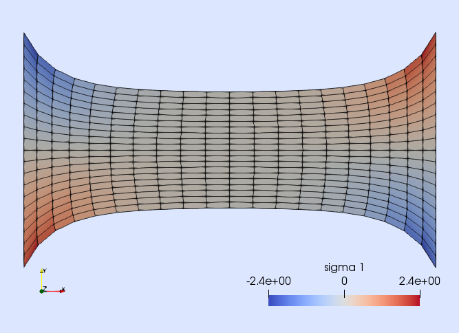
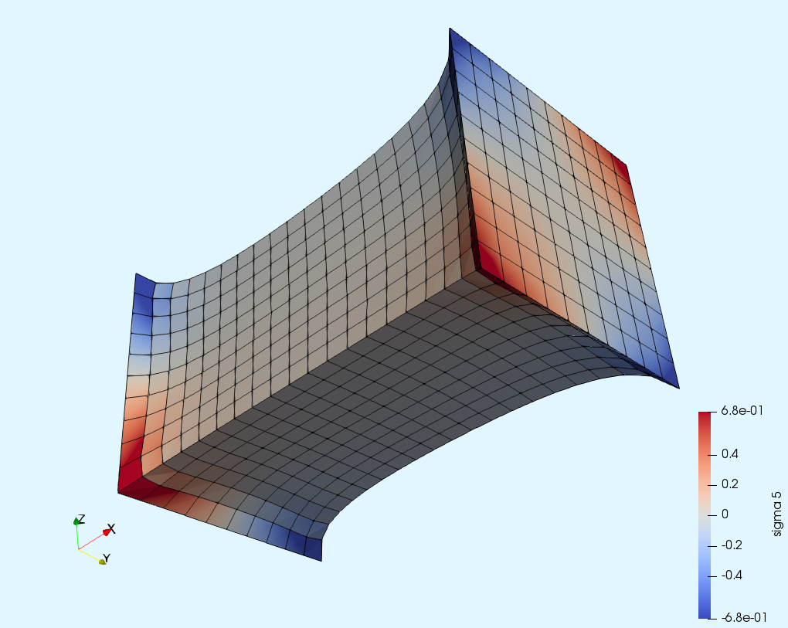

Tutorial 5: Hyper-elasticity


Problem statement
using Gridap
using LineSearches: BackTrackingMaterial parameters
const λ = 100.0
const μ = 1.0Deformation Gradient
F(∇u) = one(∇u) + ∇u'
J(F) = sqrt(det(C(F)))
#Green strain
#E(F) = 0.5*( F'*F - one(F) )
dE(∇du,∇u) = 0.5*( ∇du⋅F(∇u) + (∇du⋅F(∇u))' )Right Cauchy-green deformation tensor
C(F) = (F')⋅FConstitutive law (Neo hookean)
function S(∇u)
Cinv = inv(C(F(∇u)))
μ*(one(∇u)-Cinv) + λ*log(J(F(∇u)))*Cinv
end
function dS(∇du,∇u)
Cinv = inv(C(F(∇u)))
_dE = dE(∇du,∇u)
λ*(Cinv⊙_dE)*Cinv + 2*(μ-λ*log(J(F(∇u))))*Cinv⋅_dE⋅(Cinv')
endCauchy stress tensor
σ(∇u) = (1.0/J(F(∇u)))*F(∇u)⋅S(∇u)⋅(F(∇u))'Model
domain = (0,1,0,1)
partition = (20,20)
model = CartesianDiscreteModel(domain,partition)Define new boundaries
labels = get_face_labeling(model)
add_tag_from_tags!(labels,"diri_0",[1,3,7])
add_tag_from_tags!(labels,"diri_1",[2,4,8])Setup integration
degree = 2
Ω = Triangulation(model)
dΩ = Measure(Ω,degree)Weak form
res(u,v) = ∫( (dE∘(∇(v),∇(u))) ⊙ (S∘∇(u)) )*dΩ
jac_mat(u,du,v) = ∫( (dE∘(∇(v),∇(u))) ⊙ (dS∘(∇(du),∇(u))) )*dΩ
jac_geo(u,du,v) = ∫( ∇(v) ⊙ ( (S∘∇(u))⋅∇(du) ) )*dΩ
jac(u,du,v) = jac_mat(u,du,v) + jac_geo(u,du,v)Construct the FEspace
reffe = ReferenceFE(lagrangian,VectorValue{2,Float64},1)
V = TestFESpace(model,reffe,conformity=:H1,dirichlet_tags = ["diri_0", "diri_1"])Setup non-linear solver
nls = NLSolver(
show_trace=true,
method=:newton,
linesearch=BackTracking())
solver = FESolver(nls)
function run(x0,disp_x,step,nsteps,cache)
g0 = VectorValue(0.0,0.0)
g1 = VectorValue(disp_x,0.0)
U = TrialFESpace(V,[g0,g1])
#FE problem
op = FEOperator(res,jac,U,V)
println("\n+++ Solving for disp_x $disp_x in step $step of $nsteps +++\n")
uh = FEFunction(U,x0)
uh, cache = solve!(uh,solver,op,cache)
mkpath("output_path")
writevtk(Ω,"output_path/results_$(lpad(step,3,'0'))",cellfields=["uh"=>uh,"sigma"=>σ∘∇(uh)])
return get_free_dof_values(uh), cache
end
function runs()
disp_max = 0.75
disp_inc = 0.02
nsteps = ceil(Int,abs(disp_max)/disp_inc)
x0 = zeros(Float64,num_free_dofs(V))
cache = nothing
for step in 1:nsteps
disp_x = step * disp_max / nsteps
x0, cache = run(x0,disp_x,step,nsteps,cache)
end
end
#Do the work!
runs()Picture of the last load step

Extension to 3D
Extending this tutorial to the 3D case is straightforward. It is left as an exercise.

This page was generated using Literate.jl.